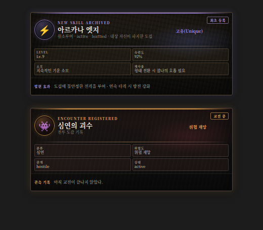
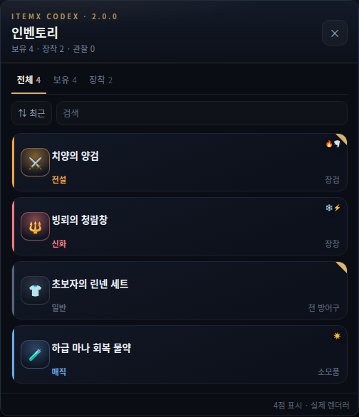
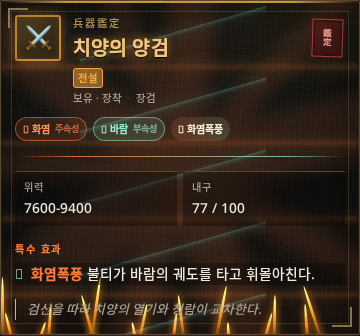
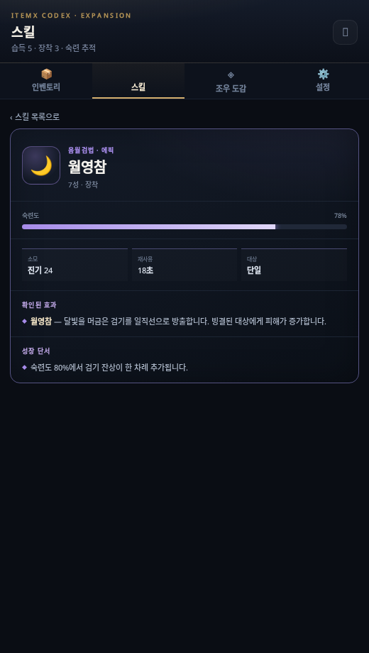
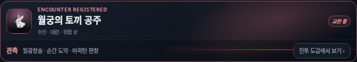
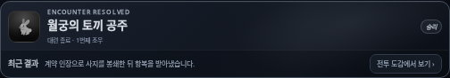
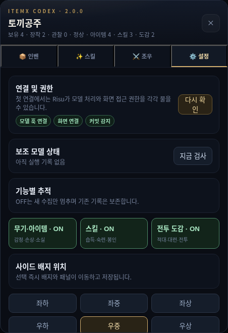

채팅에서 얻은 아이템, 익힌 스킬, 실제로 맞선 상대를 한곳에 기록합니다.
중요한 사건은 본문에 나타나고, 평소 기록은 화면 옆 CODEX에서 조용히 꺼내 봅니다.

최초 등록과 큰 변화가 일어난 문단 바로 뒤에만 나타납니다. 단순 재등장이나 변화 없는 기록은 다시 띄우지 않습니다.
각 채팅이 독립된 저장소를 가집니다. 아이템을 사용하거나 장착하고, 스킬이 성장하고, 전투가 끝나는 변화를 사건으로 이어 붙여 현재 상태를 복원합니다. 다른 봇이나 다른 채팅의 기록이 섞이지 않습니다.
| 본문 표시 | 최초 발견·습득·조우와 강화·숙련·격파 같은 큰 변화만 표시 |
|---|---|
| 보조 복구 | 모델이 놓친 기록만 문맥을 읽고 한 번에 보완하며 스트리밍 중에는 실행하지 않음 |
| 컨텍스트 | 현재 인벤토리와 활성 기록만 압축해 전달하고 본문의 내부 마커는 모델 요청에서 제거 |
획득·장착·보관·소비·손상·변형·소멸을 같은 ID로 이어서 기록합니다. 본문 카드와 인벤토리 상세는 같은 렌더러를 사용하므로 디자인이 달라지지 않습니다.


처음 기록된 고인물의 기술을 무조건 1레벨로 만들지 않습니다. 세계관의 계급과 사용 묘사를 바탕으로 보수적으로 숙련을 잡고, 소모 자원과 재사용 조건도 해당 세계관의 표현으로 남깁니다.

스킬 목록은 가벼운 시그니처만 표시하고, 화려한 전체 이펙트는 선택한 상세 한 장에만 생성합니다.
소문이나 스쳐 지나간 NPC는 등록하지 않습니다. 실제 적대·전투 또는 합의된 대련이 성립했을 때만 기록하며, 전투가 끝나면 누가 어떤 방식으로 결말을 냈는지 최근 결과에 남깁니다.
 교전 중 · 경고 효과 |
 격파 후 · 회색 기록·모션 정지 |
활성 경고선과 배경 효과까지 함께 회색으로 바뀌고 정지합니다. 종료된 상대는 다음 요청에 계속 누적하지 않으며, 다시 등장했을 때만 필요한 기록을 불러옵니다.

| 아이템 / 스킬 / 조우 | 도메인별 수집 ON/OFF |
|---|---|
| 메인 출력 | 주 모델에 활성화된 규약 주입 |
| 보조 출력 | OFF / 누락 복구 / 항상 검사. 새 설치 기본값은 OFF |
| 시각 이펙트 | 본문·인벤·스킬·조우 효과 일괄 ON/OFF |
| 글자 / 배지 위치 | 글자 소·중·대, 배지 여섯 방향 즉시 적용 |
| 현재 채팅 정리 | 플러그인을 쓰지 않을 때 본문 마커와 저장 원장 제거 |
API v3 플러그인으로 동작하며, 지원되지 않는 선택 API는 기능별 폴백으로 처리합니다. 기존 ITEMX 모듈 상태를 자동 이전하지는 않으므로 구형 ITEMX 모듈과 동시에 켜지 않는 편이 안전합니다.
GitHub 공개 저장소에서 설치 파일과 업데이트를 함께 제공합니다.
플러그인 다운로드 GitHub 저장소자동 업데이트는 플러그인 파일의 버전과 공개 업데이트 주소를 사용합니다. 유료 GitHub 기능은 필요하지 않습니다.